GPU: AMD Radeon RX 5700 XT
Red Dead Redemption 2 · Windows · D3D12 · HelixSR upscalers vs FSR 3.1.5 · input FSR 2.X
| Quality mode | Native mode | |||||
|---|---|---|---|---|---|---|
| Metric | HLX DLSS | HLX FSR 4 | FSR 3.1.5 | HLX DLSS | HLX FSR 4 | FSR 3.1.5 |
| OS | Windows | Windows | Windows | Windows | Windows | Windows |
| Input | FSR 2.X | FSR 2.X | FSR 2.X | FSR 2.X | FSR 2.X | FSR 2.X |
| Output resolution | 1920x1080 | 1920x1080 | 1920x1080 | 1920x1080 | 1920x1080 | 1920x1080 |
| Upscale GPU time | 1.57 ms | 1.71 ms | 0.90 ms | 1.94 ms | 1.80 ms | 1.36 ms |
| FPS | 60.0 | 60.0 | 59.1 | 91.9 | 92.9 | 95.4 |
- FSR 3.1.5 has the lowest upscale time in both modes. In Quality its single reading (0.90 ms) is well below its running average (1.46 ms), so the real gap is smaller. The Quality averages are 1.59 ms (HLX DLSS), 1.63 ms (HLX FSR 4) and 1.46 ms (FSR 3.1.5).
- HLX DLSS and HLX FSR 4 swap places between modes: HLX DLSS is faster in Quality (1.57 vs 1.71 ms), HLX FSR 4 is faster in Native (1.80 vs 1.94 ms).
- Quality FPS sits at about 60 for all three, which looks like a frame cap, so FPS does not separate them here. Native FPS comes from a different, lighter scene, so FPS should not be compared between the two modes.
- Scenes are not pixel-identical: NPCs, horses, clouds and foliage moved between shots, so look at the crops for general detail, not exact matches.
Zoomed comparison
Crops come from the 1080p screenshots and are enlarged with no smoothing: 2x for scenery, 3x for the hair crops.
Hair (300% zoom)
Curl definition in the hair and how clean the edge is against the road.
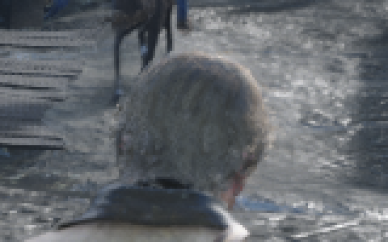
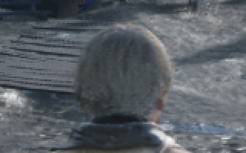
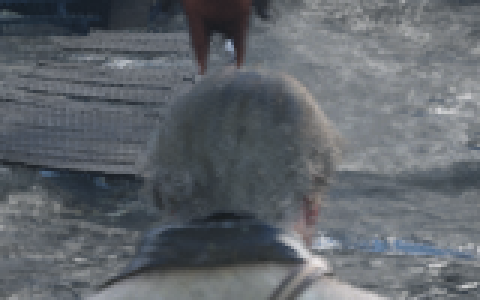
Saints Hotel sign and wall
Letter edges on the sign, plank lines and the dark barrel below.
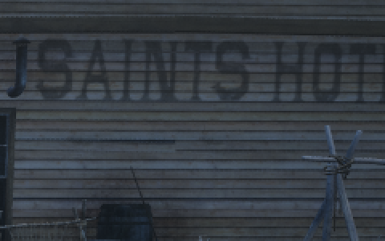
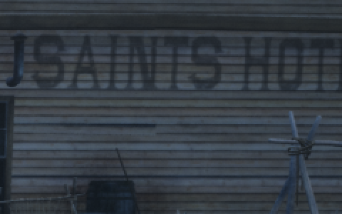
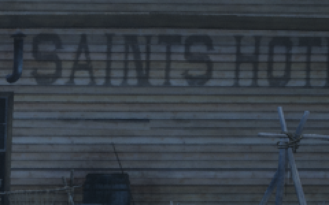
Church and hillside
Church windows, bell tower detail and thin power lines against the trees.
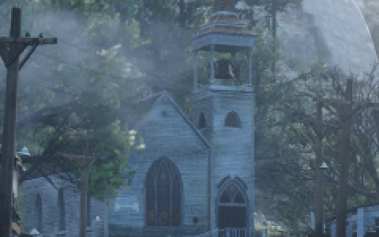
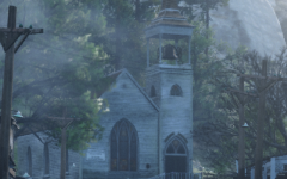
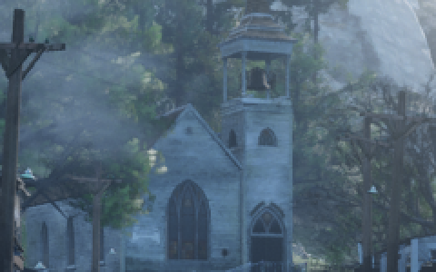
Left building roof planks
Plank edges, the lattice under the roof and any shimmer or moire.
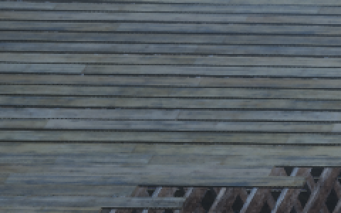
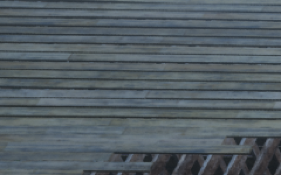
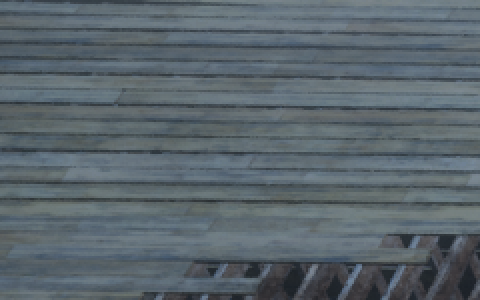
Mud and grass on the ground
Grass blade edges and the wet, reflective mud texture.
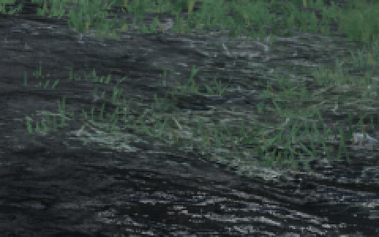
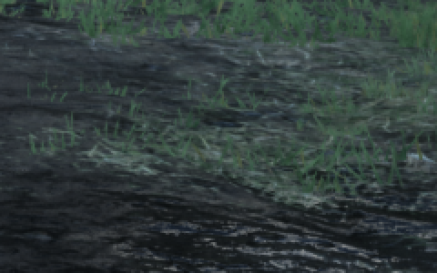
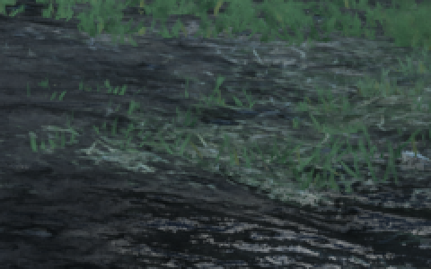
Hair (300% zoom)
Individual hair strands and how soft or crisp the hair edge looks against the barn.
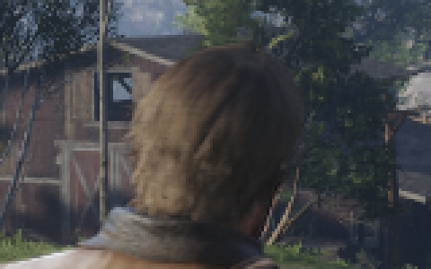
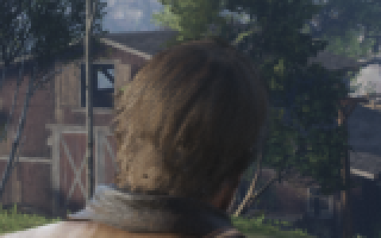
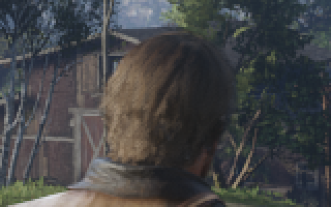
Character head and jacket
Hair strands, jacket stitching and the star emblem.
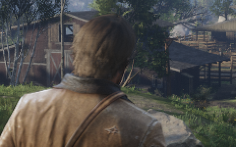
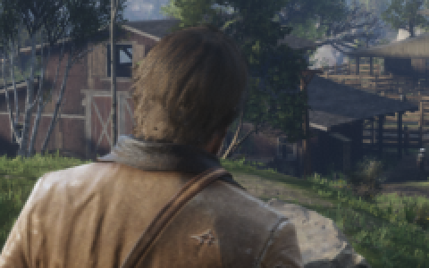
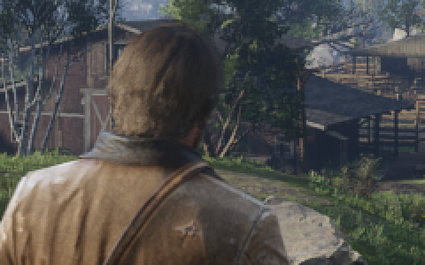
Distant barn and roofs
Wood plank lines, window frames and the tiny walking figures.
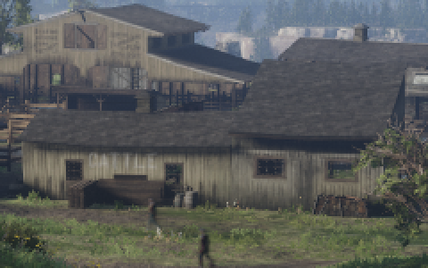
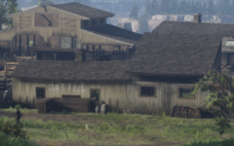
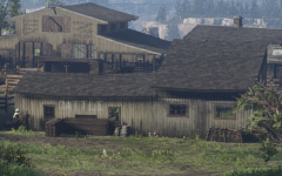
Fence and grass
Grass blade edges and the fence post outlines against the foliage.
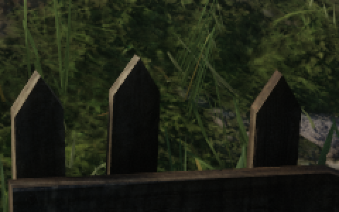
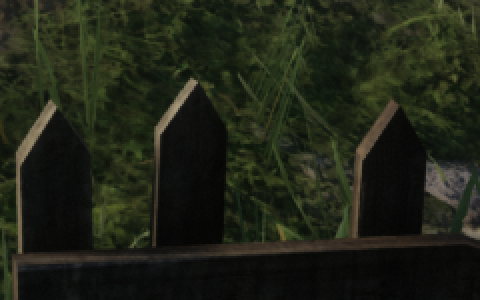
Tree foliage against the sky
Leaf cluster edges, thin branches and any shimmer or smearing.
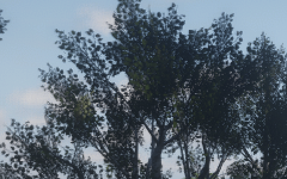
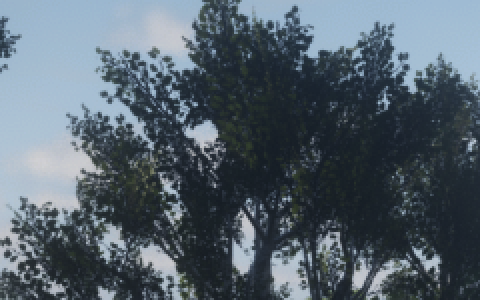
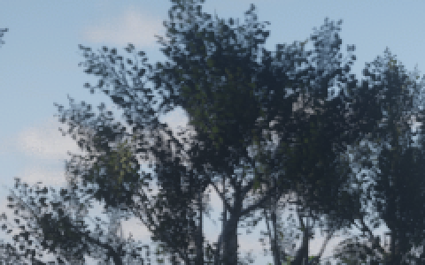